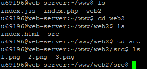

С помощью утилиты Putty подключились к веб-серверу kubsu.ru.
С помощью утилиты ping были получены данные о подключении к веб-серверу kubsu.ru. Она показывает ip адресс - 185.13.84.92 и время подключения к серверу - 1.11 мс.

С помощью утилиты nslookup были получены данные о подключении к веб-серверу kubsu.ru. Она показывает A-записи и MX-записи домена. После выполнения команды мы видим результаты, включая IP-адреса, соответствующие указанному доменному имени, а также информацию о DNS-серверах.

С помощью утилиты whois были получены данные о веб-серверах kubsu.ru и kubsu-dev.ru. Она показывает дату регистрации домена и прочую информацию о сервере:
домен, состояние, владельца сервера - Kuban State University, время создания сервера - 1998-03-28 12:18:30.

С помощью команды git clone скопировал сайт на сервер kubsu.ru из репозитория в github. С помощью команд cd и ls можно увидеть изменения в папке на сервере.
Каталог до загрузки
Каталог после загрузки
С помощью программы FileZilla были загружены файлы из каталога WWW c сервера kubsu.ru.